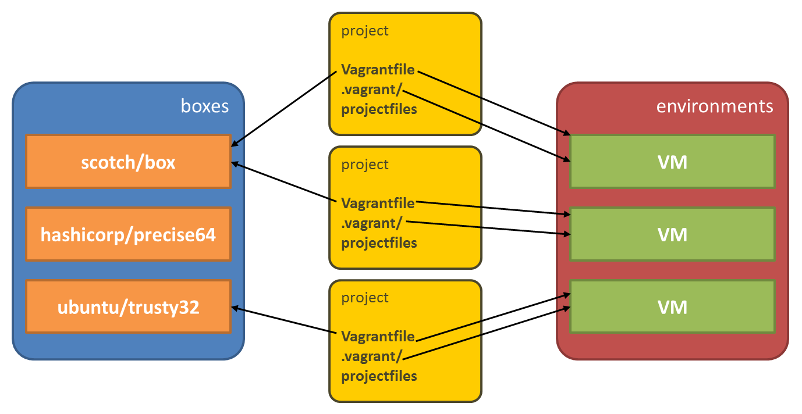
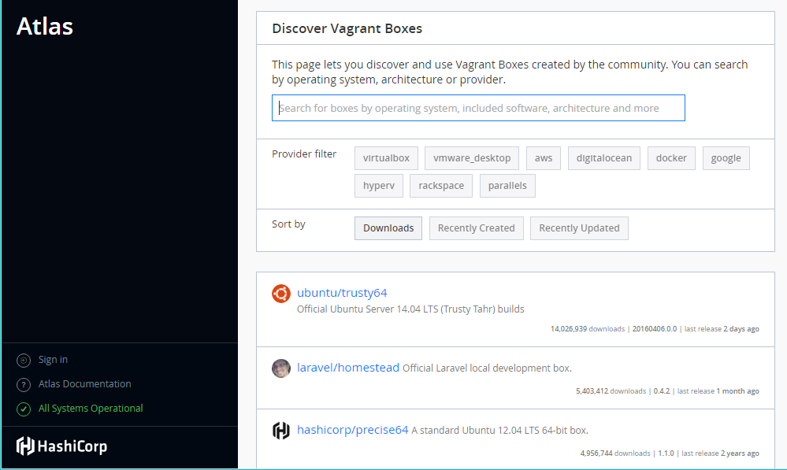

But it worked on my machine
php.inihttpd.conf)
An OS user holds a repository of (base) boxes. (Base) boxes are blueprints of VMs i.e. they are copied when used. A Vagrantfile file in your project describes the virtual environment: which box is used, which TCP/IP ports are forwarded, etc. As you can see, multiple projects can use the same box. For each project, a seperate environment is created. This involves that the box is copied and set up as a VM, accordingly to the Vagrantfile. A VM is hosted by a provider such as VirtualBox. The .vagrant/ folder contains the environment references for the local machine.
vagrant command to your PATH
$ vagrant box add scotch/box~homedir/.vagrant.d/boxes or alike
$ cd my-project
$ vagrant initVagrantfile in your folder, full of commented examples
Vagrantfile referencing the boxVagrant.configure("2") do |config|
config.vm.box = "scotch/box"
end$ vagrant upVagrantfile does not exist, it is automatically added
Vagrantfile
$ cd my-project
$ vagrant init scotch/box
$ vagrant up$ vagrant sshVagrantfile) is shared in the VM's directory /vagrant (this is not /home/vagrant)
vagrant and password vagrant
~homedir/VirtualBox VMs
projectfolder/.vagrant holds the references to the VM files
$ vagrant up (re)starts the machine
$ vagrant suspend pauses the machine
$ vagrant resume restarts a suspended machine
$ vagrant halt shuts down the machine (at first gracefully)
$ vagrant destroy stops the machine and removes the machine from your system = interesting feature
$ vagrant box remove BOXNAME removes the (base) box from your system
Vagrantfile of your project describes
Vagrantfile is the sole description of your environment you share with others
projectfolder/.vagrant
$ vagrant ssh NEVER install packages nor change config files UNLESS you are building a base box yourself. Not reproducible.
Vagrantfile, restart (or even rebuild) the VM such that the changes take effect
Vagrantfile with port forwardingVagrant.configure("2") do |config|
config.vm.box = "scotch/box"
config.vm.network "forwarded_port", guest: 80, host: 8080
endVagrantfile hinting for private networkingVagrant.configure("2") do |config|
config.vm.box = "scotch/box"
config.vm.network "private_network", ip: "192.168.50.4"
endVagrantfile hinting for a bridged network (DHCP)Vagrant.configure("2") do |config|
config.vm.box = "scotch/box"
config.vm.network "public_network"
endifconfig to obtain the IP address
/vagrant (no config required)
Vagrantfile hinting for a synced folderVagrant.configure("2") do |config|
config.vm.box = "scotch/box"
config.vm.network "private_network", ip: "192.168.33.10"
config.vm.synced_folder ".", "/var/www", :mount_options => ["dmode=777", "fmode=666"]
endscotch/box
VagrantfileVagrant.configure("2") do |config|
config.vm.box = "scotch/box"
config.vm.network "private_network", ip: "192.168.33.10"
config.vm.synced_folder ".", "/var/www", :mount_options => ["dmode=777", "fmode=666"]
end/etc/apache2/sites-available/000-default.conf in scotch/box<VirtualHost *:80>
ServerAdmin webmaster@localhost
DocumentRoot /var/www/public
…
</VirtualHost>projectfolder/public
$ vagrant package and share it
vagrant up process
$script = <<SCRIPT
echo I am provisioning...
date > /etc/vagrant_provisioned_at
SCRIPT
Vagrant.configure("2") do |config|
config.vm.provision "shell", inline: $script
end$ vagrant up that creates the environment
$ vagrant provision is used on a running environmen
$ vagrant reload --provision or $ vagrant up --provision is called
Vagrant.configure("2") do |config|
config.vm.box = "ubuntu/trusty32"
config.vm.provision :shell, path: "./provision/bootstrap.sh"
config.vm.synced_folder "./provision", "/home/vagrant/provision"
end*.sql
--provision-with
Vagrantfile
Vagrantfile
.vagrant folder → .gitignore
composer install?
$ vagrant ssh
php composer.phar locally
vendor folder to .gitignore
$ vagrant box outdated to find outdated boxes on your system
$ vagrant box update to download and install the new box version(s)
Vagrantfile with config.vm.box_version
Vagrantfile and provisioning scripts
.gitignore, composer.json, …
ubuntu/trusty32 box.
Homestead and ~/homestead.yaml links to the real project folders. You download the base code from GitHub